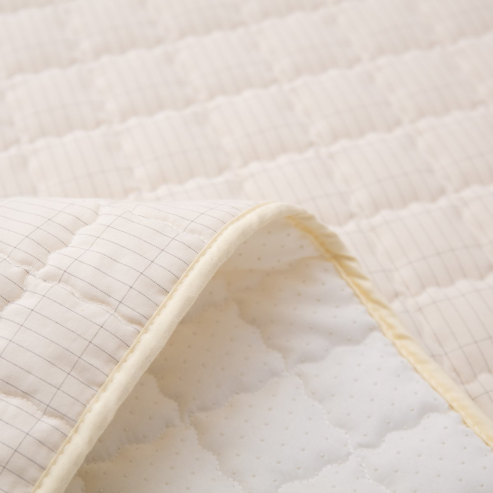
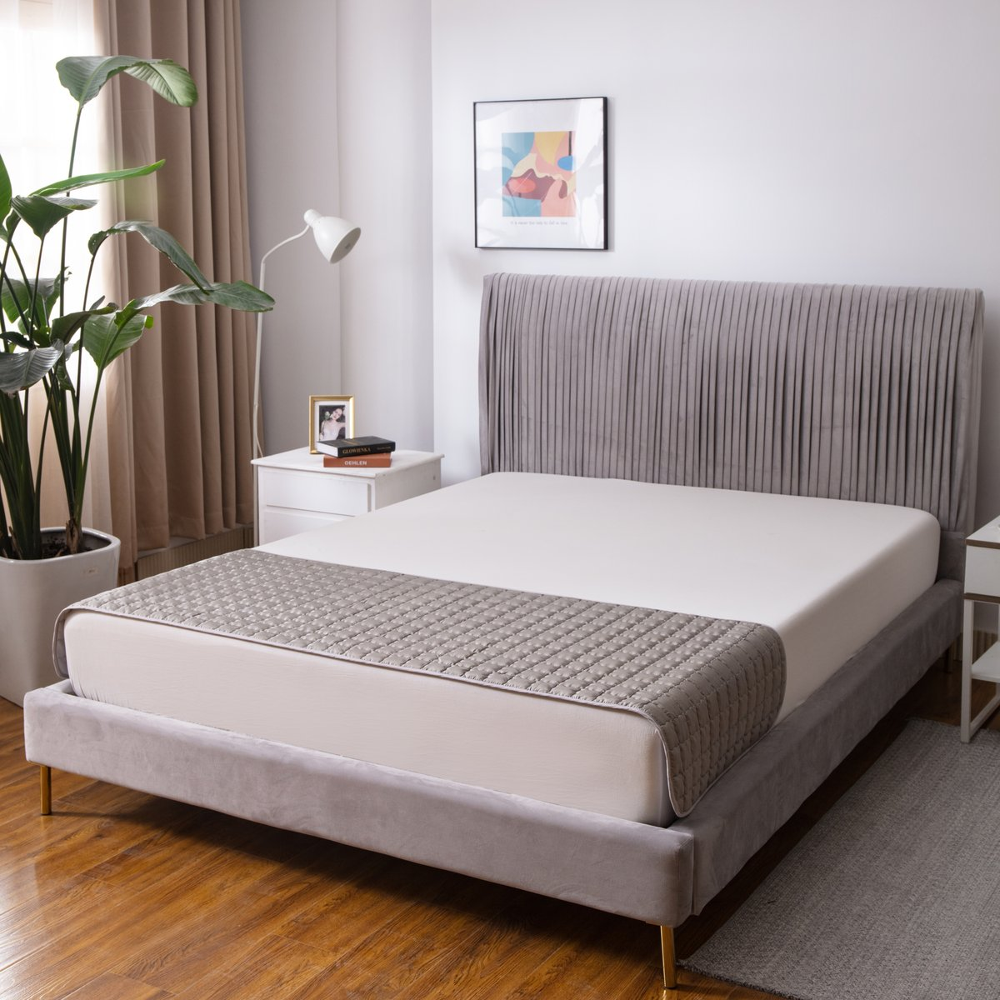
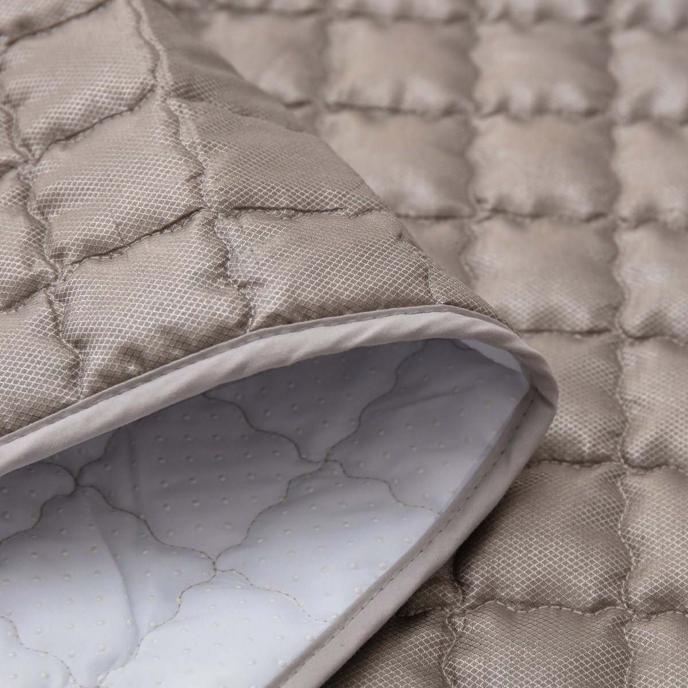
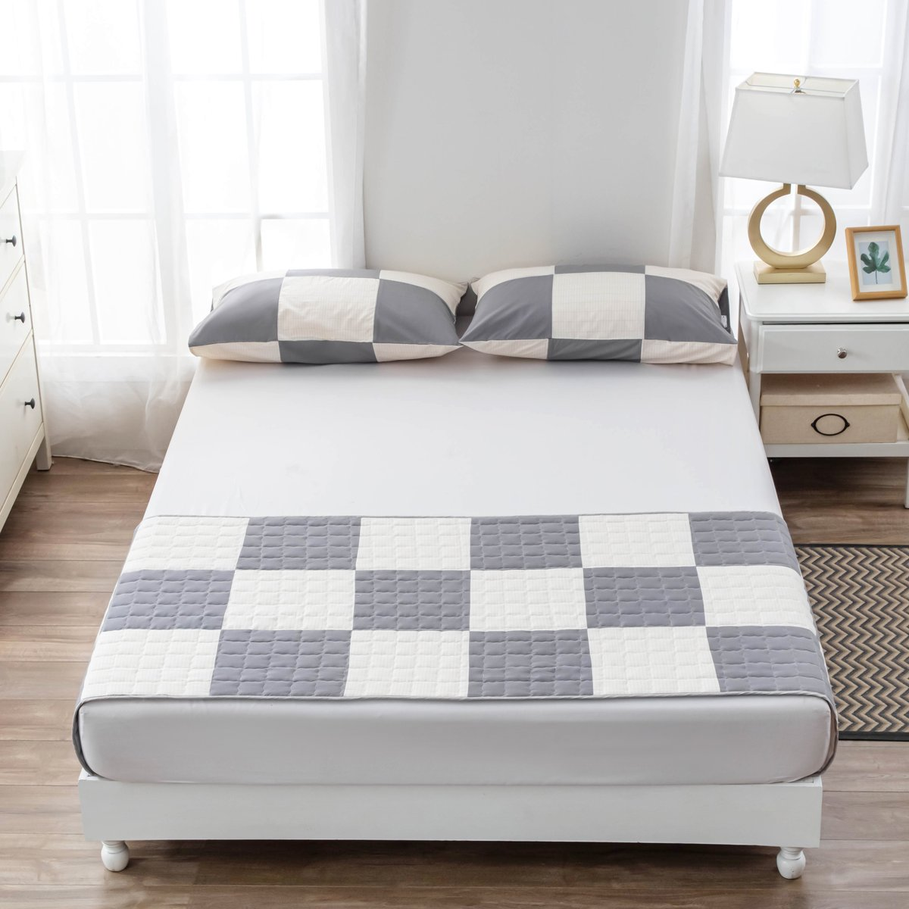
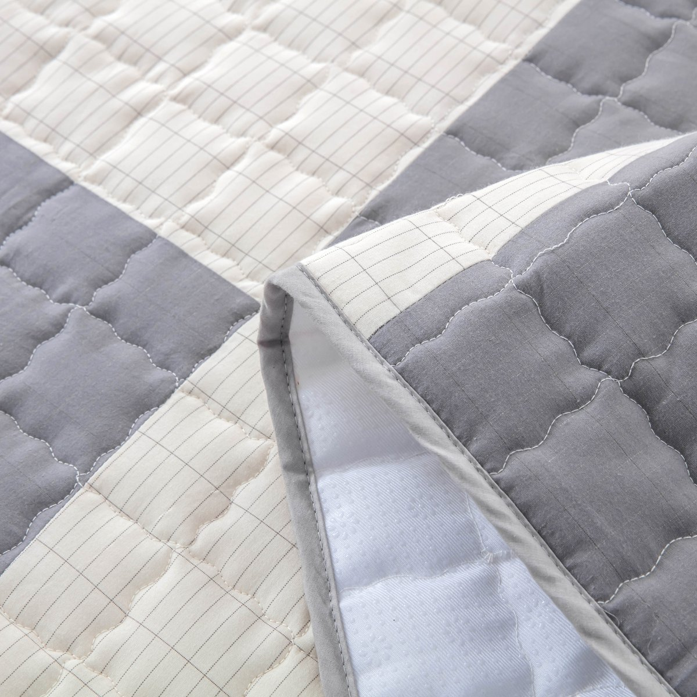

Grounding Quilt Mat







Our Grounding Quilt Mat combines the comfort of a traditional quilt with advanced conductive silver fiber technology. Designed for everyday use on beds, sofas, or any seating area, it delivers the natural grounding benefits of silver fiber in a soft, breathable form.
The quilted construction ensures even distribution of the silver fiber throughout the mat, providing consistent grounding coverage. The silver fiber grid connects through a detachable ground cord to the Earth's energy, helping reduce the impact of ambient EMF exposure while you rest.
Available in multiple sizes, with custom branding available for wholesale and OEM orders.
Request Wholesale Quote